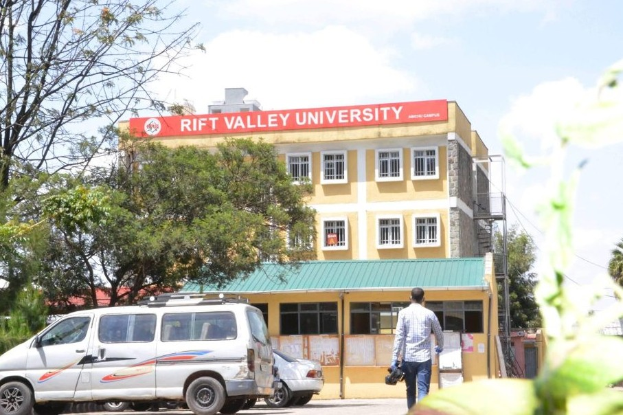
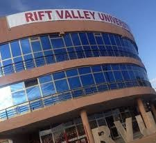

RVU University is one of the Leading Private University known with cultural diversity and research university with 54 campus across the Addis Ababa and different regions,
its campuses offers wide ranges of Courses such medical Courses, Engineering and Technology Courses, social sciences courses and busineses as well.
It was founded in 2000 in Adama oromo region and upgrade as a University in 2014
For me information please visit our CampusesWe offer numberous courses ranging from Intermediate, Degree, Postgraduate Diploma and Postgraduate Degrees as well
We offer Intermediate course to the average students who did not perform well in the Grade 12 exams, before the enrolled for the Degree program in our University, we also offer Diploma program that will enhanced students capabailities for the enrolled for the Advanced Degree program
We offer Degree courses to the best students who did perform well in the Grade 12 exams, are allow to enrolled for the Degree program in our University, we also offer Diploma program that will enhanced students capabailities for the hand job opportunities
We offer Postgraduate program courses to the average students who did perform well in the Advanced Degree level and qualified for the Postgraduate programs like Master and PhD Programs as well
We have 22 campuses within Addis Ababa City Administration and 32 Campuses across the Ethiopia with head quarter located in Adama City of the Oromo regions and making the Rift Valley University leading University with very Campuses acrosses the Ethiopian Regions and Somailand Campus located in Hergus the Capital of the Somailand Region


our campuses offer different facilities all over Ethiopia and Somailand regions such as academic library laborary, Computer laborary and school cafe
It has a wide ranges of books and Catelog from Medical school, nursing, medical laborary science, nutritions and dental science, social sciences and Technology books from Computer science and different Engineering department
This is one of the female academic libary where girls read different books and Catelog from Medical school, nursing, medical laborary science, nutritions and dental science, social sciences and Technology books from Computer science and different Engineering department
This libary Reminder area where students are alert in case the students did not return the book he/she has taken, send notifications to the students who did not return books on time and help in collecting different fines the students as panelity
Rift Valley University has provided me with an incredible environment for academic growth. The curriculum in the different academic departments challenging but rewarding. We always thanks to the support of the faculty, we have been able to maintain high standards and prepare for a global career. The ICT facilities and the dedication of the lecturers make it the best place to study technology, Medical schools and social sciences
What I love most about Rift Valley University is the focus on practical skills. It’s not just about reading books; it's about preparing for the real world. The ICT facilities and the dedication of the lecturers make it the best place to study technology
Studying at Rift Valley University was a life-changing decision. The university doesn't just give you a degree; it gives you the confidence to lead in your community and your profession. I am proud to be a student here